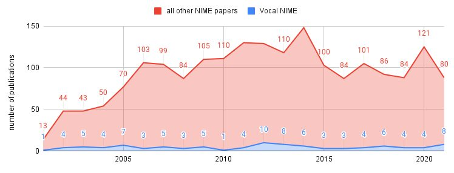
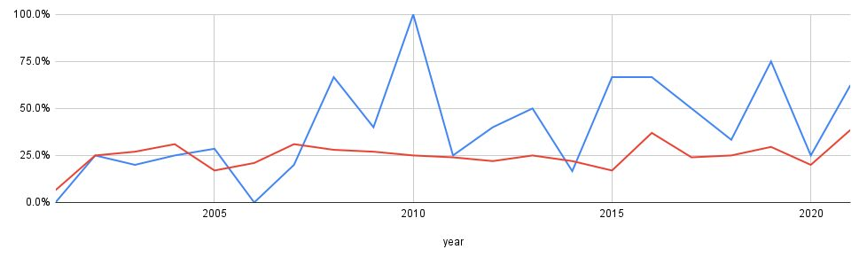
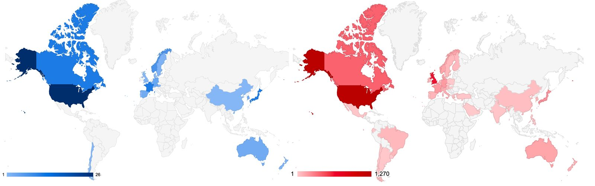
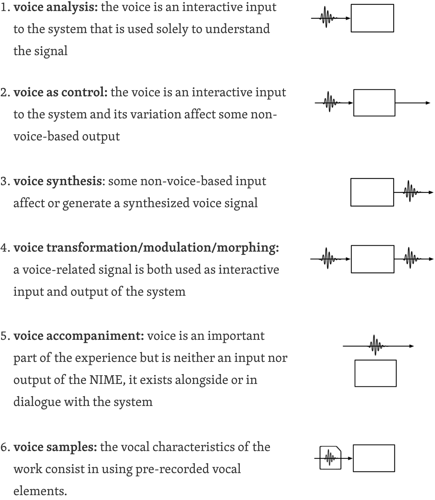
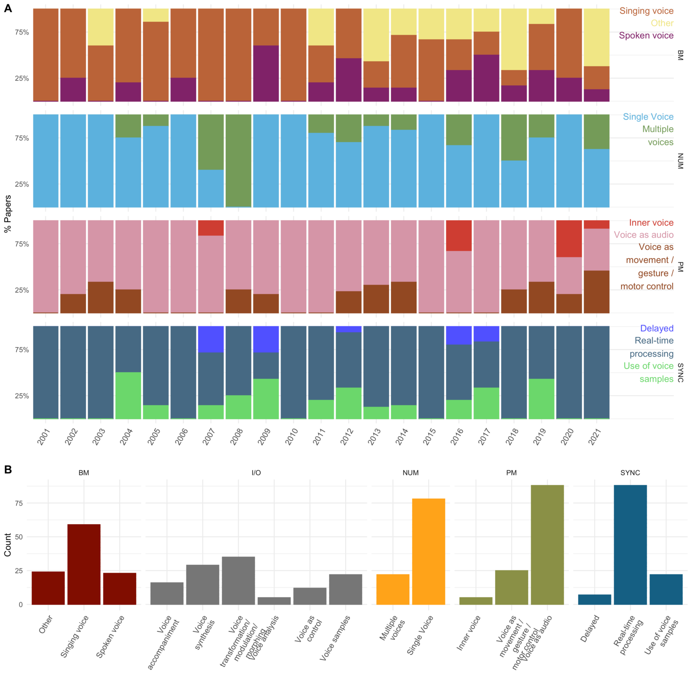

Voice at NIME: a Taxonomy of New Interfaces for Vocal Musical Expression
Abstract
We present a systematic review of voice-centered NIME publications from the past two decades. Musical expression has been a key driver of innovation in voice-based technologies, from traditional architectures that amplify singing to cutting-edge research in vocal synthesis. NIME conference has emerged as a prime venue for innovative vocal interfaces. However, there hasn’t been a systematic analysis of all voice-related work or an effort to characterize their features. Analyzing trends in Vocal NIMEs can help the community better understand common interests, identify uncharted territories, and explore directions for future research. We identified a corpus of 98 papers about Vocal NIMEs from 2001 to 2021, which we analyzed in 3 ways. First, we automatically extracted latent themes and possible categories using natural language processing. Taking inspiration from concepts surfaced through this process, we then defined several core dimensions with associated descriptors of Vocal NIMEs and assigned each paper relevant descriptors under each dimension. Finally, we defined a classification system, which we then used to uniquely and more precisely situate each paper on a map, taking into account the overall goals of each work. Based on our analyses, we present trends and challenges, including questions of gender and diversity in our community, and reflect on opportunities for future work.
Author Keywords
voice, vocal, singing, speech, analysis, synthesis, review, survey
CCS Concepts
Applied computing → Arts and humanities → Sound and music computing; Media arts; Performing arts;
General and reference → Document types → Surveys and overviews;
Human-centered computing → Human computer interaction (HCI) → Interactive systems and tools;
Introduction
The history of voice technology is intimately connected to musical expression. From the atrium of Ancient Greek temples to the vaults of Byzantine and Gothic churches, the desire to enhance the singing voice has driven the study and engineering of acoustics in architecture [1][2]. More recently, musical expression driving technological innovation can be seen in the history of audio recording. Both the first known audio recording by Martinville in 1860 and the first demonstration of the phonograph by Thomas Edison not only used human voices but human voices singing [3][4] – respectively "Au clair de la lune” and “Mary had a little lamb”. Although tools for audio recording, playback and synthesis are now commonplace, the proliferation of such technologies led to profound shifts in our society as depicted by the controversial work of anthropologist Carpenter, who studies isolated populations being exposed to audio and video recording technology for the first time [5]. The intersection of voice technology with music can also have strong neurological and behavioral effects on individuals. Musically modulating the way someone hears their own voice, by manipulating pitch, formants, or using filters, has been associated with modifications in emotion [6][7], semantic content [8], even disfluency regulation [9], highlighting the potential of musical voice technologies to create powerful transformative experiences.
Because of their musical affinities, artists and creative technologists have taken part in this impactful trend by creating vocal experiences that push the boundaries of technological innovation and musical expression. Notable examples include Alvin Lucier’s “I am sitting in a room” (1969) which uses the voice to deepen our perception of space. Far from being used merely a input signal, the voice is here considered both in relation to the external architectural space, and in its connection with the self as Lucier had a severe stutter and used the inherent music of the room as a way to “smooth out any irregularities [his] speech might have” [10]. Another example is Laurie Anderson’s “Handphone Table” that challenges silence and materiality by transmitting a silent vocal signal by bone conduction directly to visitor’s ear [11]; and Machover’s “Philadelphia Voices” that creates a dialogue between diverse voices. In this piece, digital technologies allow the public to contribute their own voice to the final symphony [12].
The international conference on New Interfaces for Musical Expression began in 2001 as a workshop at the Conference on Human Factors in Computing Systems (CHI). After 20 years, the conference is well established and has reached a state of maturity. In recent years, the number of review articles presented at NIME has increased, indicating an introspective drive of the community to better understand its own roots, evolution, and possible future trajectories. Such review articles have targeted overarching values and questions in the research community such as evaluation [13], community [14], gender balance [15], sustainability [16] as well as types and presentation of work including sound installations [17], live performance [18], and score-centered NIMES [19].
Given the musical potential, high degrees of expressivity, and universality of the voice, the presence of voice-centered work at NIME is not surprising. Darwin even suggested that the voice is likely to be the first musical instrument [20]. But despite its familiarity, it can be challenging to clearly define what the voice is. Often considered solely in its acoustic manifestation, the voice is also studied in terms of its complex neurological basis, its mechanical and muscular processes, its biology in the context of clinical medicine, its cognitive and behavioral effects in psychology, etc. This is to say that the object “voice” can take a number of forms and is a fruitful ground for creative and innovative thinking around expressivity. Because of its diversity of backgrounds, skills and traditions, its freedom of not staying within the constraints of specific field boundaries, and its drive for expressivity, the NIME community appears uniquely equipped to explore the voice in creative and non-traditional ways. Thus, an encompassing categorization of Vocal NIMEs should start from a holistic and open-minded view of the voice.
Works about the voice have indeed been a consistent presence at NIME, and related academic communities, and previous attempts have been made at categorization. For example, d’Alessandro et al. present an overview encompassing decades of work on singing interfaces [21]. Focusing specifically on the NIME community, Reed and colleagues analyzed 20 papers on the control of the singing voice and proposed to distinguish between “voice as controller,” “controllers for vocal synthesis,” and “direct control” [22]. While this approach highlights the important distinction of the voice as an input versus output, we believe that the richness of Vocal NIMES can be described with more granularity and would benefit from including systems that invoke the voice not only in traditional singing contexts but within the full diversity of voice modalities.
Starting from a broad interpretation of what the voice can encompass, we present an attempt to gather, organize, classify, and categorize Vocal NIMEs. We seek to describe diverse characteristics of existing Vocal NIMES and to inform future NIME works in which voice might play a central role. We aim to provide a qualitative yet structured assessment that is both critical and informative. To this end, we combined manual review and automatic natural language processing (NLP) in our effort to gather, extract, sort and categorize information to make sense of the field of Vocal NIMEs.
We first describe our methodology for selecting papers and choices for types of demographic data to include, including methods of encoding gender and diversity, and present overall trends. We then present an initial investigation using unsupervised document clustering and topic modeling in an attempt to structure concepts for our corpus. Inspired by the emerging themes and informed by a thorough reading of all papers in our corpus, we propose a system of descriptors to encode the characteristics and key features of Vocal NIMEs. Finally, integrating the authors’ intent and context of the work, we categorize articles according to their similarities. This analysis produced five categories, which we propose to use as a taxonomy to classify past and future Vocal NIMEs. We conclude with insights, trends, and observations derived from our analysis.
Corpus and demographics
Corpus
In line with previous reflective studies of the NIME conference, we collected our corpus from the scientific proceedings of NIME from 2001 to 2021, with a total of 1,972 documents that include papers of all lengths. To identify publications with voice as a core component, we searched for all papers containing the words “voice,” “vocal,” “sing,” “singing” or “singer” at least once, yielding 521 documents. We then manually verified that the voice was a central element of the work and discarded instances where voice is only used to refer to hardware (“voice-coil”, “singing bowl”) or is used metaphorically in reference to music tracks, melody lines, MIDI messages or voice-leading. We also excluded papers for which the voice was clearly a secondary part of the system, an afterthought, or used as an example on the same level as other instruments (“media such as voice, ambient sound and music”). We included six articles that described a collection of various works, a common format for early NIME publications, if at least one work was about the voice. The final corpus contained a total of 98 papers.
The temporal distribution of papers shows strong consistency as a minority but persistently present theme in the conference. Figure 1 plots for each year the number of Vocal NIME papers against the total number of publications that year. Ranging from 1 to 10 per year, Vocal NIME papers never represent more than 10% of the total proceedings but remained between 3 and 10% for the past decade.


Figure 1: Number of Vocal NIME papers (in blue) compared to the total number of NIME publications (in red) from 2001 to 2021
Gender representation
We are interested in the gender representation of voice-related projects from our corpus because the voice is inherently connected with identity and gender. In terms of biology, the human voice is highly sexually dimorphic and can be seen as a strong marker of our hormonal identity. Social norms have also shaped the voice differently for men, women, and non-binary people throughout history [23][24][25].
We identified publications involving at least one woman author through internet searches on authors’ profiles, publicly available biographical information, and other texts from the author. This approach presents limitations as it does not account for non-binary authors or authors whose gender identity may not be reflected in publicly available information. To compare with the gender breakdown of NIME at large, we established the percentage of NIME publications including at least one woman author. The percentage from 2001 to 2018 was extracted from Xambó’s paper on gender balance [15], whose methodology we followed to derive the data for subsequent years. The results are shown in Figure 2. A Wilcoxon signed-rank test revealed that the observed difference between the ratio of papers with at least one woman author in our Vocal NIME corpus for each year (Mdn.=38.78%) compared to the entire NIME corpus (Mdn.=24.89%) are statistically significant, p=.0089<.05.


Figure 2: Percentage of papers with at least one woman author in the Vocal NIME corpus (in blue) and in the general NIME corpus (in red)
Geographical origins, accessibility, and diversity
Vocal traditions are a rich part of cultures around the world, and the voice presents an opportunity to introduce elements of geographic and cultural diversity at NIME. Our analysis first examined the geographic origins of Vocal NIMEs compared to NIME at large based on the authors’ country of affiliation. One limitation of this approach is that authors’ original country of origin are not taken into account if they work in a different country. Figure 3 shows the distribution of non-unique authors by their affiliation country for Vocal NIMES on the left and for the entire NIME corpus on the right adapted from [26]. While at least one work from our corpus has come from five continents, the authors’ affiliation countries are slightly less extensive than for NIME at large.


Figure 3: Distribution of non-unique authors by affiliation’s country for Vocal NIMES (in blue) and for the entire NIME corpus (in red)
We also identified work that extends the understanding of the voice beyond traditional Western musical contexts and work that extends to underrepresented or marginalized populations. For each paper in our corpus, we determined whether some elements of non-western, indigenous, street, or folk cultures played a central role in some stage of the project, such as inspiration, or choice of practitioners. Looking for the inclusion of perspectives from underrepresented and otherly abled populations, we identified 17 works that make some reference to such themes. The first of these Vocal NIMEs appeared only in 2007, and subsequent works maintain a marginal presence, averaging around 1 paper per year.
Unsupervised theme identification
To begin analyzing our corpus, we applied techniques from natural language processing to categorize papers and to suggest latent themes. We used two unsupervised machine learning methods to yield complementary insights: clustering to provide a top-down organization of the corpus, and topic models to identify latent topics. Results from both analyses were then interpreted to inform downstream manual annotation.
Preprocessing
From each paper’s PDF file, we extracted text and addressed mis-read words (e.g. at line breaks). We then tokenized and lemmatized the corpus, removing words from a stopword list including standard English stopwords, and voice-specific and NIME-specific terms that we identified as not useful to our analysis.
Document Clustering
Clustering attempts to automatically group data into discrete sets. Here, we expect these sets to correspond to a useful categorization of corpus papers. As a first step, we transformed our documents into a numerical feature representation: the popular term frequency-inverse document frequency (TF-IDF) technique. TF-IDF reflects how important a given word is to a document, and a document’s TF-IDF feature vector has one such dimensional value for each word in the corpus vocabulary. In our case, this resulted in >800-dimensional feature vectors for our corpus. We applied k-Means clustering to our dataset, with k=8 clusters based on iterative manual inspection of documents and cluster coherence.
Topic Modeling
To explore possible latent themes in our corpus (in contrast to an imposed category structure), we used topic modeling via latent Dirichlet allocation (LDA). LDA is a generative model that uses latent variables to probabilistically explain similarity between data observations, in this case documents. Similar to the document clustering, we set the number of topics to 8 after an initial manual exploration.
Example
This automated analysis aimed to provide an overall view and initial insights to inform our survey approach. Rather than comprehensively survey these results, we detail results where relevant to our later analysis. For example, the largest cluster (N=28) in our cluster analysis contained several papers related to live performance. Inspecting word contributions by feature importance, we find the words performer, sensor, gesture, and audience to be most central to this cluster.
We later identify a category we call “Voice in performance/experience,” which shares similar concepts. Conversely, smaller clusters contained central words like mouth, tongue, microphone, shape; which points to “Voice beyond audio”, another category we later identify and define. In the sections that detail our manual characterization of papers in our corpus, we offer additional background information about aspects of the automated analysis.
Characteristics and descriptors
In this section, we use a hybrid deductive-inductive approach inspired by thematic analysis in identifying useful characteristics to describe Vocal NIME works. We deductively apply concepts from both prior work and our NLP-based automated analysis results, and inductively seek to discover details and other salient topics from the corpus. The pilot NLP-based analysis highlighted a series of important terms and possible ways to describe common themes and unique characteristics. However, these results could not be automatically converted to clear categories and characteristics (e.g. topic models are notoriously difficult to interpret), so we treated these results as surfacing useful concepts to consider in a methodical qualitative analysis procedure. One researcher created an initial set of characteristics and categories by thoroughly examining and sorting papers in the corpus and reviewing NLP results. Two other researchers subsequently reviewed this categorization, and any disagreements were resolved through discussion. Following this, we propose five characteristics that can help describe Vocal NIMEs: Voice I/O, Behavioral Modality, Presentation Modality, Number of Voices, and Synchrony. Each of these five characteristics derives a series of possible attributes. In the following section, we define each characteristic and describe their attributes. Learnings from using this system to survey our corpus are presented in Figure 4.
Voice I/O
Prior work [27] has already highlighted the important distinction between systems where the voice is used as an input control vs systems generating and controlling a synthesized vocal output. Our topic model results surfaced some relevant terms, for example, topic 2 (top-4 words: synthesis, pitch, feature, user; suggesting analysis and control). Several related terms also had high TF-IDF scores (summed across documents), such as “controller” (#17 of all >800 words), “input” (#18), “microphone” (#33), and “output” (#51). By analyzing the corpus, it appears that this characterization goes further than a simple input vs output dichotomy. By considering NIME systems as black boxes, we noted six possible ways for the voice to interface with a system, which define as descriptors:


Some of these descriptors can co-exist, for instance when the instruments operate in several different modes [28], when papers describe a collection of different projects [29], or in the case of live looping [30]
These descriptors allow us to define the context in which the voice is considered in the NIME community. In the case of voice as control, the voice often takes the shape of a given, natural instrument is then extended. In the case of voice synthesis, it is seen as an intricate signal that we aim to teach machines to replicate. This I/O perspective also suggests different perspectives on expressivity depending on whether a NIME is used to shed light on or operate alongside a live performer (voice accompaniment), versus if the system inputs or outputs prerecorded static recordings (voice samples).
Behavioral modality
The focus of most NIME works is to enhance musical expression, in this sense, musical use of the voice through singing represents a large part of our corpus. However, our previous analysis also hints at the importance of the spoken voice, for example, topic 3 from our topic model (top-4 words: speech, synthesis, model, tract), with “speech” also being the 4th word in our corpus, by TF-IDF score (summed across all documents).
Looking at the corpus in more depth, we identified an even broader range of possible voice modalities denoting a rich, varied interpretation of vocal expressivity that includes vocalizations such as laughing and screaming. For simplicity, we segment the vocal modality used into three categories:
singing voice
spoken voice
other voice modalities
We noted a wide diversity of additional voice modalities from our corpus including breathing [31][32][33][34][35][36][37], tangible vibrations [38][34][39][33][36][40], whispering [41][42][43], mouthing [44][45], vocal spasm [46], beatboxing [47][48], laughing [49], roaring [41], throat singing [50], screaming [51], humming [42], whistling [52], croaking [53], clicking [54], and buzzing [54].
Presentation modality
The NLP-based analysis highlights the embodiment of the voice. Topic 7 from our topic model strongly points to physical components of vocal production (top-4 words: mouth, tongue, microphone, shape). Even though most projects treat the voice as an audio signal, our corpus also contains work considering the voice as a complex, multimodal sensorial experience, such as laryngeal gestures, accompanying facial expressions, or muscle activation and movement. This denotes various levels of embodiment in the presentation of the vocal experience as an internal mechanical process. This internal feature of the voice is further shown through work considering the voice as purely internal by focussing on the inner voice. For the purpose of this work, we understand the term embodiment as the involvement of the body in the consideration of the voice. The body can be seen as secondary when the voice is only considered as a sound: the body can be in the foreground when the voice is considered as a movement, finally when the voice is considered as a neurological, silent phenomenon, it can be considered pre-embodied as the inner voice has been associated with neurological predictive signals for motor action preceding actual vocal action. From these considerations, we identified three descriptors for this characteristic:
The NLP-based analysis highlights the embodiment of the voice. Topic 7 from our topic model strongly points to physical components of vocal production (top-4 words: mouth, tongue, microphone, shape). Even though most projects treat the voice as an audio signal, our corpus also contains work considering the voice as a complex, multimodal sensorial experience, such as laryngeal gestures, accompanying facial expressions, or muscle activation and movement. This denotes various levels of embodiment in the presentation of the vocal experience as an internal mechanical process. This internal feature of the voice is further shown through work considering the voice as purely internal by focussing on the inner voice. For the purpose of this work, we understand the term embodiment as the involvement of the body in the consideration of the voice. The body can be seen as secondary when the voice is only considered as a sound: the body can be in the foreground when the voice is considered as a movement, finally when the voice is considered as a neurological, silent phenomenon, it can be considered pre-embodied as the inner voice has been associated with neurological predictive signals for motor action preceding actual vocal action. From these considerations, we identified three descriptors for this characteristic:
the voice after leaving the body as a sound signal,
the voice in its embodied characteristics of movement, gesture or motor control
the voice in its pre-embodied form in the purely internal signal of an inner voice
These three possibilities often coexist, as in systems using internal voice-related signals (such as EEG, EMG, or camera vision of mouth shape) to control a synthesized vocal output.
When the voice is considered primarily as a sound signal, we noted a wide variety of acoustic features used by authors. Some of them are common, though at times appearing under different names or mathematical definitions such as Pitch/F0, Formants, Voicedness, or Vocal Timbre. Others are less common and not always consistent in their definition. This includes vibrato, loudness, amplitude, resonances, localization, intensity, vocal fold tenseness, MFCC Coefficients, LPC roots, timing, inhale/exhale, decay, threshold, glottal waveform, inharmonicity, clarity, spectral centroid, spectral spread, spectral kurtosis, vocal effort, tongue shape, tenseness, and velum (nasality). This lack of consistency and common language highlights a potential need for unifying the terminology of voice parameters.
Number of voices
The voice is a fundamental instrument both for personal expression and for interpersonal communication. The voice as a tool for projection and expression is rich both on its own and in its potential to engage in dialogues. We marked a distinction between NIME works that consider one vocal signal and those that consider multiple voices. Again, results from our topic model pointed to distinct associations between solo and group activity: topic 1 (top-4 words: performer, sensor, gesture, audience) vs. topic 6 (top-4 words: participant, vibration, experience, group).
Synchrony
The level of synchrony also appears as a possible descriptor of our corpus. Indeed, although analysis or synthesis-based projects often aim at reducing processing delay for a seamless experience, other works use delay as an artistic tool (or even pre-recorded audio samples) to achieve new experiences. We distinguish three attributes for this characteristic:
Real-time processing (not introducing additional delay other internal processing lags)
Delayed (when the delay is intentional)
Use of voice samples (when the sound is decoupled in time from its generation)
Figure 4 summarizes the review of the Vocal NIME corpus according to the five characteristics.


Figure 4: Distributions of paper characteristics (A) over time (normalized within each dimension), and (B) in aggregate. BM = Behavioral Modality, NUM = Number, PM = Presentation Modality, SYNC = Synchrony, I/O = Voice I/O. We exclude Voice I/O from (A) due to the number of characteristics.
Toward a taxonomy
Our characterization of Vocal NIMEs attempted to describe common features and different approaches. In this section, we go a step further by deriving a taxonomy that allows vocal NIMEs to be situated in a semantic map of the research space. Inspired by Ishii’s pyramid [55], which postulates that research may be driven by pushing the boundaries of enabling technologies (bottom level), finding new applications (middle level), or in service of a vision (top level), our taxonomy also has three levels. These levels are similar in concept, but we find it more helpful to define each of them by the key question they ask about the system to categorize.
The top level which asks about the context, intention or vision behind the research, and a middle level that asks what the system does or enables people to do. The first two items of the top level (control of voice synthesis, voice as control) are taken directly from our previous categorization and are motivated by clear scientific goals. We established other new categories for similar but more artistic or exploratory work, as well as emerging applications.
Voice in performance: Two different contexts emerged for papers with identical characterizations such as hand-based control of singing voice synthesis. Some are evaluated in terms of engineering feats and seek to push the boundaries of technical capabilities while others are designed for performance and evaluated as artistic experiences.
Voice training: While only three papers belong to this category, training the voice is an age-old question with many nuances (e.g. breath control, rhythm, ear training), where new technologies can make contributions.
Voice Beyond Audio: The framing of the voice as more than an audio signal is noteworthy in the context of expression and encompasses different angles including invoice voice, tangible vocal vibrations, and face/tongue movement tracking.
Non-Human Voices: We observed a few works focusing on non-human voices, with most of them occurring in the past 5 years which may represent a rising trend. In two cases, the authors intentionally anthropomorphized to give “voice” to electrical components or socially interacting robots. In other cases, the papers consider the vocal experiences of other animals. A common theme of these explorations is the voice as a means to sensitize humans for other beings.
To disambiguate between works with similar motivation and design, we introduce a lower level that asks how the system is technically implemented. For instance, the large number of NIMEs that transfer the control of the voice to the hands can be differentiated based on the type of device controlled by the hands (e.g. augmented instrument, tablet, free-hand gestures). We present the result of this categorization situating the 98 papers of the corpus in Table 1.
Table 1 : Categorisation of Vocal NIMEs
Category (vision) | Subcategory (application) | Implementation | Papers |
Control of voice synthesis / morphing | Hand-based control | tangible object / augmented instrument | |
screen/stylus | |||
free movements (camera, BCI, EMG) | |||
glove/wearable | |||
joystick | |||
Other | |||
Voice as control | Spoken | ||
Sung | |||
Voice in performance / experience | Hand-based control | tangible object / augmented instrument | |
free movements (camera, BCI, EMG) | |||
glove/wearable | |||
Voice Visualization | |||
Social / Collaborative | |||
Other | [114][115][116][117][118][119][120][121][122][123][124][125][126][127][128] | ||
Voice beyond audio | Face/tongue tracking | ||
Inner voice | |||
Other / vibrations | |||
Voice training | |||
Non-human voices | |||
Uncategorized |
To encourage easy exploration of this corpus through our taxonomy, we provide an interactive web-based tool [https://nimevoice2022.vercel.app/].
Discussion and insights
As previously observed Vocal NIMEs have been a small but consistent part of the community over the years. Some works come from a small but dedicated contingent of researchers who consistently contribute new publications that explore similar themes. Others seem to be one-off explorations on some aspect of the voice with no follow-up in subsequent years. Here, we identify some opportunities for future research in terms of diversity-related themes and the implications of Vocal NIME research beyond NIME.
Diversity
Only seven papers in our corpus consider the voice beyond the context of traditional western music. In terms of extensions to ancient traditions, indigenous and marginalized communities, we noted references to Buddhist chanting, American street culture, ancient Egypt, Irish folk culture, Papua New Guinea, Tuvan throat singing, Chinese traditions, and Colombian migrants. This list represents geographic diversity, but there are even many more unique vocal traditions from around the world that can inspire future Vocal NIMEs.
In terms of work promoting inclusivity, we only noted two references to underrepresented populations in the deaf community and people with severe disabilities. Projects considering the voice beyond words and even beyond acoustic representations could be particularly relevant for people with disabilities, such as non-verbal children and adults, stroke survivors, or people who stutter.
Finally, one clear insight from our corpus demographics is the increased gender parity of Vocal NIMEs (38.7% with at least one woman author) compared to NIME at large (24.9%). Although still far from gender balanced, the voice is one theme that can promote more collaborations between NIME researchers and researchers from fields with stronger women’s representation, such as Speech Language Pathology[149] and Linguistics [150].
Our analysis highlights the potential of the theme "voice" in inspiring researchers from various backgrounds. This may inform actions to increase equity and diversity in the community by bringing voice to the forefront or creating special interest groups around the theme of the voice.
Beyond NIME
As Vocal NIMEs present new analytic, interactive, and conceptual approaches to working with the voice, we explored how their impact might extend beyond the NIME community into other voice-related work. We gathered metadata from papers that cited those in our Vocal NIME corpus using Semantic Scholar (excepting 5 not-found papers; N=1169 from 920 unique papers). From each, we then extracted venue and field of study with the Semantic Scholar graph API, post-processing venues manually to aggregate (e.g. “NIME” and “NIME ‘07”).
References to Vocal NIMEs appear in a wide range of research venues, most commonly computer music and HCI venues including NIME (N=209), ICMC (N=38), the Computer Music Journal (N=31), SIGGRAPH ASIA (N=28), CHI (N=26), SIGGRAPH and Organized Sound (N=18 each), and TEI (N=17). ICASSP and INTERSPEECH, popular for speech and vocal processing, also appeared prominently (N=11 each). Other venues included multimedia (ACM Multimedia, N=9), movement (MOCO, N=6), acoustics (JASA, N=6), accessibility (ASSETS, N=2), psychology (Front. Psych., N=2), and particular works in further domains including robotics (IROS, HRI), affective computing (ACII, Trans. Aff. Comp.), and AI (AAAI, PRICAI).
We also looked at fields of study represented, via the Semantic Scholar API. The most frequently appearing field is Computer Science (N=854). Others include Engineering (N=133), Psychology (N=62), Art (N=30), Medicine (N=15), Sociology (N=13), Mathematics (N=13), Philosophy (N=7), Physics (N=2), Materials Science (N=1), and Geography (N=1). Although in practice we find these labels can often only be approximate(e.g. “Medicine” might reflect Physiology), we believe they broadly reflect the diversity of citing work.
Overall, vocal NIMEs have a wide-ranging impact on many near and distant academic fields. This suggests insights and methods from NIME can inform various aspects of the broader voice research landscape. We encourage authors interested in vocal NIMEs to consider the potential impact of their work in diverse disciplines.
Conclusion
This work contributes a taxonomy and descriptive system of key characteristics of Vocal NIMEs, based on a corpus we defined and analyzed with a mixed-methods approach. Our work offers a unified vocabulary to describe Vocal NIMEs, organizes trends in research themes, and identifies underexplored territories for future voice-related research. Our work has several limitations. For example, we only address research publications at NIME, not installations or performances. Our investigation suggests that the voice can be a bridge between diverse areas of research and artistic practice. We hope that our reflections can inspire new Vocal NIMEs to enhance expression, connection, and well-being.
Ethics statement
None of the authors of this paper reported a conflict of interest. We addressed accessibility and inclusion by reviewing our corpus in light of gender balance and geographic diversity, as well as additionally discussing accessibility and references to non-western and marginalized cultures, which contributes to the open dialogue on inclusion within the NIME community. Our diversity- and inclusion-related findings are presented with the hope of encouraging more research in these directions. In terms of data privacy, only publicly available data were used in the analysis. This work didn’t include human participants or animals.
Citations
- ↩Declercq, N. F., & Dekeyser, C. S. (2007). Acoustic diffraction effects at the Hellenistic amphitheater of Epidaurus: Seat rows responsible for the marvelous acoustics. The Journal of the Acoustical Society of America, 121(4), 2011–2022.
- ↩Noxon, A. (2001). Understanding church acoustics. Acoustic Sciences Corporation.
- ↩Feaster, P. (2010). Edouard-Leon Scott de Martinville: an annotated discography. ARSC Journal., 41(1), 43.
- ↩Linder, G. (2001). Thomas Edison. Capstone.
- ↩Prins, H. E., & Bishop, J. (2001). Edmund Carpenter: Explorations In Media & Anthropology. Visual Anthropology Review, 17(2), 110–140.
- ↩Costa, J., Jung, M. F., Czerwinski, M., Guimbretière, F., Le, T., & Choudhury, T. (2018). Regulating feelings during interpersonal conflicts by changing voice self-perception. Proceedings of the 2018 CHI Conference on Human Factors in Computing Systems, 1–13.
- ↩Aucouturier, J.-J., Johansson, P., Hall, L., Segnini, R., Mercadié, L., & Watanabe, K. (2016). Covert digital manipulation of vocal emotion alter speakers’ emotional states in a congruent direction. Proceedings of the National Academy of Sciences, 113(4), 948–953.
- ↩Kleinberger, R., George, S., & Franjou, S. (2019). Speech companions: Evaluating the effects of musically modulated auditory feedback on the voice. The 25th International Conference on Auditory Display, ICAD 2019.
- ↩Kleinberger, R. R. H. M. F. (2020). Vocal connection rethinking the voice as a medium for personal, interpersonal, and interspecies understanding [Phdthesis]. Massachusetts Institute of Technology.
- ↩Lucier, A. (1970). I am sitting in a room (Vol. 1013). Lovely Music.
- ↩Li, Y.-T., & Lai, W.-S. (2013). Voice, object and listening in the sound installations of Laurie Anderson. International Journal of Performance Arts and Digital Media, 9(2), 347–361.
- ↩van Troyer, A. (2013). Constellation: a tool for creative dialog between audience and composer. 10th International Symposium on Computer Music Multidisciplinary Research.
- ↩Barbosa, J., Malloch, J., Wanderley, M. M., & Huot, S. (2015). What does" Evaluation" mean for the NIME community? Proceedings of the International Conference on New Interfaces for Musical Expression, NIME.
- ↩Marquez-Borbon, A., & Stapleton, P. (2015). Fourteen years of NIME: the value and meaning of “community” in interactive music research. Proceedings of the International Conference on New Interfaces for Musical Expression, NIME.
- ↩Xambo Sedo, A. (2018). Who are the women authors in NIME?—improving gender balance in NIME research. Proceedings of the International Conference on New Interfaces for Musical Expression, NIME.
- ↩Masu, R., Melbye, A. P., Sullivan, J., & Jensenius, A. R. (2021). NIME and the Environment: Toward a More Sustainable NIME Practice. Proceedings of the International Conference on New Interfaces for Musical Expression, NIME.
- ↩Fraisse, V., Guastavino, C., & Wanderley, M. M. (2021). A Visualization Tool to Explore Interactive Sound Installations. Proceedings of the International Conference on New Interfaces for Musical Expression, NIME.
- ↩West, T., Caramiaux, B., Huot, S., & Wanderley, M. (2021). Making Mappings: Design Criteria for Live Performance. Proceedings of the International Conference on New Interfaces for Musical Expression, NIME.
- ↩Masu, R., Do Nascimento Correia, N., & Romao, T. (2021). NIME scores: a systematic review of how scores have shaped performance ecologies in NIME. Proceedings of the International Conference on New Interfaces for Musical Expression, NIME.
- ↩Darwin, C. (1964). On the origin of species: A facsimile of the first edition. Harvard University Press.
- ↩d’Alessandro, C., Delalez, S., Doval, B., Feugère, L., & Perrotin, O. (2019). Les instruments chanteurs. Acoustique et Techniques: Trimestriel d’information Des Professionnels de l’acoustique, 89, 36–43.
- ↩Reed, C., McPherson, A., & others. (2020). Surface Electromyography for Direct Vocal Control. Proceedings of the International Conference on New Interfaces for Musical Expression, NIME.
- ↩Pemberton, C., McCormack, P., & Russell, A. (1998). Have women’s voices lowered across time? A cross sectional study of Australian women’s voices. Journal of Voice, 12(2), 208–213.
- ↩Watson, S. (2019). The Unheard Female Voice: Women are more likely to be talked over and unheeded. But SLPs can help them speak up and be heard.
- ↩Collins, S. A., & Missing, C. (2003). Vocal and visual attractiveness are related in women. Animal Behaviour, 65(5), 997–1004.
- ↩Xambo Sedo, A. (2018). Who are the women authors in NIME?—improving gender balance in NIME research. Proceedings of the International Conference on New Interfaces for Musical Expression, NIME.
- ↩Fasciani, S., & Goode, J. (2021). 20 NIMEs: Twenty Years of New Interfaces for Musical Expression. Proceedings of the International Conference on New Interfaces for Musical Expression, NIME.
- ↩Reed, C., McPherson, A., & others. (2020). Surface Electromyography for Direct Vocal Control.
- ↩Schlessinger, D. (2012). Concept Tahoe: Microphone Midi Control. Proceedings of the International Conference on New Interfaces for Musical Expression, NIME.
- ↩Levin, G. (2005). A Personal Chronology of Audiovisual Systems Research. Proceedings of the International Conference on New Interfaces for Musical Expression, NIME.
- ↩Barbosa, J., Wanderley, M. M., & Huot, S. (2017). Exploring playfulness in Nime design: the case of live looping tools. Proceedings of the International Conference on New Interfaces for Musical Expression, NIME.
- ↩Nagashima, Y. (2003). Bio-Sensing Systems and Bio-Feedback Systems for Interactive Media Arts. Proceedings of the International Conference on New Interfaces for Musical Expression, NIME.
- ↩Jaimovich, J. (2016). Emovere: Designing Sound Interactions for Biosignals and Dancers. Proceedings of the International Conference on New Interfaces for Musical Expression, NIME.
- ↩Kiefer, C., & Chevalier, C. (2018). Towards New Modes of Collective Musical Expression through Audio Augmented Reality. Proceedings of the International Conference on New Interfaces for Musical Expression, NIME.
- ↩Kleinberger, R. (2018). Vocal Musical Expression with a Tactile Resonating Device and its Psychophysiological Effects. Proceedings of the International Conference on New Interfaces for Musical Expression, NIME.
- ↩Alarcón Dı́az, X., Gonzalez Sanchez, V. E., & Erdem, C. (2019). INTIMAL: Walking to feel place, breathing to feel presence. Proceedings of the International Conference on New Interfaces for Musical Expression, NIME.
- ↩Cotton, K., Sanches, P., Tsaknaki, V., & Karpashevich, P. (2021). The Body Electric: A NIME designed through and with the somatic experience of singing. Proceedings of the International Conference on New Interfaces for Musical Expression, NIME.
- ↩Li, Y., Piao, Z., & Xia, G. (2021). A Wearable Haptic Interface for Breath Guidance in Vocal Training. Proceedings of the International Conference on New Interfaces for Musical Expression, NIME.
- ↩Andersson, A.-P., & Cappelen, B. (2013). Designing empowering vocal and tangible interaction. Proceedings of the International Conference on New Interfaces for Musical Expression, NIME.
- ↩Kleinberger, R. (2018). Vocal Musical Expression with a Tactile Resonating Device and its Psychophysiological Effects. Proceedings of the International Conference on New Interfaces for Musical Expression, NIME.
- ↩Poepel, C., Feitsch, J., Strobel, M., & Geiger, C. (2014). Design and Evaluation of a Gesture Controlled Singing Voice Installation. Proceedings of the International Conference on New Interfaces for Musical Expression, NIME.
- ↩Kiefer, C., & Chevalier, C. (2018). Towards New Modes of Collective Musical Expression through Audio Augmented Reality. Proceedings of the International Conference on New Interfaces for Musical Expression, NIME.
- ↩Cotton, K., Sanches, P., Tsaknaki, V., & Karpashevich, P. (2021). The Body Electric: A NIME designed through and with the somatic experience of singing. Proceedings of the International Conference on New Interfaces for Musical Expression, NIME.
- ↩Holbrow, C., Jessop, E., & Kleinberger, R. (2014). Vocal vibrations. Proceedings of the International Conference on New Interfaces for Musical Expression, NIME.
- ↩Brown, C., Razzaque, S., & Paine, G. (2015). Rawr! a study in sonic skulls: embodied natural history. Proceedings of the International Conference on New Interfaces for Musical Expression, NIME.
- ↩Lind, A. (2018). Animated notation in multiple parts for crowd of non-professional performers. Proceedings of the International Conference on New Interfaces for Musical Expression, NIME.
- ↩Bergsland, A. (2011). The six Fantasies Machine–an instrument modelling phrases from Paul Lansky’s Six Fantasies. Proceedings of the International Conference on New Interfaces for Musical Expression, NIME.
- ↩McLean, A., Shin, E., & Ng, K. (2013). Paralinguistic Microphone. Proceedings of the International Conference on New Interfaces for Musical Expression, NIME.
- ↩Lyons, M. J., Haehnel, M., & Tetsutani, N. (2020). Designing, playing, and performing with a vision-based mouth interface. Proceedings of the International Conference on New Interfaces for Musical Expression, NIME.
- ↩D’Alessandro, N., Calderon, R., & Müller, S. (2011). ROOM# 81-Agent-Based Instrument for Experiencing Architectural and Vocal Cues. Proceedings of the International Conference on New Interfaces for Musical Expression, NIME.
- ↩Lui, S. (2013). A Compact Spectrum-Assisted Human Beatboxing Reinforcement Learning Tool On Smartphone. Proceedings of the International Conference on New Interfaces for Musical Expression, NIME.
- ↩Fasciani, S., & Wyse, L. (2012). A voice interface for sound generators: adaptive and automatic mapping of gestures to sound. Proceedings of the International Conference on New Interfaces for Musical Expression, NIME.
- ↩Oh, J., & Wang, G. (2013). LOLOL: Laugh Out Loud On Laptop. Proceedings of the International Conference on New Interfaces for Musical Expression, NIME.
- ↩Brown, C., Razzaque, S., & Paine, G. (2015). Rawr! a study in sonic skulls: embodied natural history. Proceedings of the International Conference on New Interfaces for Musical Expression, NIME.
- ↩Wu, J. C., Rau, M., Zhang, Y., Zhou, Y., & Wright, M. J. (2017). Towards robust tracking with an unreliable motion sensor using machine learning. Proceedings of the International Conference on New Interfaces for Musical Expression, NIME.
- ↩Lind, A. (2018). Animated notation in multiple parts for crowd of non-professional performers. Proceedings of the International Conference on New Interfaces for Musical Expression, NIME.
- ↩Lind, A. (2018). Animated notation in multiple parts for crowd of non-professional performers. Proceedings of the International Conference on New Interfaces for Musical Expression, NIME.
- ↩Chandran, D., & Wang, G. (2018). InterFACE: new faces for musical expression. Proceedings of the International Conference on New Interfaces for Musical Expression, NIME.
- ↩Schedel, M., Smith, B., Cosgrove, R., & Hwang, N. (2021). RhumbLine: Plectrohyla Exquisita—Spatial Listening of Zoomorphic Musical Robots. Proceedings of the International Conference on New Interfaces for Musical Expression, NIME.
- ↩Villicaña-Shaw, N., Carnegie, D. A., Murphy, J., & Zareei, M. (2021). Speculātor: visual soundscape augmentation of natural environments. Proceedings of the International Conference on New Interfaces for Musical Expression, NIME.
- ↩Villicaña-Shaw, N., Carnegie, D. A., Murphy, J., & Zareei, M. (2021). Speculātor: visual soundscape augmentation of natural environments. Proceedings of the International Conference on New Interfaces for Musical Expression, NIME.
- ↩Ishii, H., Lakatos, D., Bonanni, L., & Labrune, J.-B. (2012). Radical atoms. Interactions, 19(1), 38–51. https://doi.org/10.1145/2065327.2065337
- ↩Cook, P. (2017). 2001: Principles for Designing Computer Music Controllers. In A NIME Reader (pp. 1–13). Springer.
- ↩Cook, P. R. (2005). Real-time performance controllers for synthesized singing. Proceedings of the International Conference on New Interfaces for Musical Expression, NIME, 236–237.
- ↩Cook, P. R. (2009). Re-Designing Principles for Computer Music Controllers: a Case Study of SqueezeVox Maggie. Proceedings of the International Conference on New Interfaces for Musical Expression, NIME, 218–221.
- ↩Wang, J., D’Alessandro, N., Fels, S. S., & Pritchard, B. (2011). SQUEEZY: Extending a Multi-touch Screen with Force Sensing Objects for Controlling Articulatory Synthesis. Proceedings of the International Conference on New Interfaces for Musical Expression, NIME, 531–532.
- ↩Astrinaki, M., D’Alessandro, N., Reboursière, L., Moinet, A., & Dutoit, T. (2013). MAGE 2.0: New Features and its Application in the Development of a Talking Guitar. Proceedings of the International Conference on New Interfaces for Musical Expression, NIME, 547–550.
- ↩Yamamoto, K., & Igarashi, T. (2016). Livo: Sing a song with a vowel keyboard. Proceedings of the International Conference on New Interfaces for Musical Expression, NIME, 3, 460–468.
- ↩Wu, J., Weitzner, N., Yeh, Y., Abel, J., Michon, R., & Wright, M. (2015). Tibetan singing prayer wheel: a hybrid musical-spiritual instrument using gestural control. Proceedings of the International Conference on New Interfaces for Musical Expression, NIME.
- ↩Advincula, G. B., Haddad, D. D., & Larson, K. (2019). Grain Prism: Hieroglyphic Interface for Granular Sampling. Proceedings of the International Conference on New Interfaces for Musical Expression, NIME, 284–285.
- ↩Yoshimura, F., & Jo, K. (2019). A" voice" instrument based on vocal tract models by using soft material for a 3D printer and an electrolarynx. Proceedings of the International Conference on New Interfaces for Musical Expression, NIME, 411–412.
- ↩Champagne, A., Pritchard, B., Dietz, P., & Fels, S. (2021). Investigation of a Novel Shape Sensor for Musical Expression. Proceedings of the International Conference on New Interfaces for Musical Expression, NIME.
- ↩D’Alessandro, N., d’Alessandro, C., Le Beux, S., & Doval, B. (2006). Real-time CALM Synthesizer: New Approaches in Hands-Controlled Voice Synthesis. Proceedings of the International Conference on New Interfaces for Musical Expression, NIME, 266–271.
- ↩d’Alessandro, N., & Dutoit, T. (2007). Handsketch bi-manual controller: investigation on expressive control issues of an augmented tablet. Proceedings of the International Conference on New Interfaces for Musical Expression, NIME, 78–81.
- ↩Astrinaki, M., d’Alessandro, N., & Dutoit, T. (2012). MAGE-A Platform for Tangible Speech Synthesis. Proceedings of the International Conference on New Interfaces for Musical Expression, NIME.
- ↩Oh, J., & Wang, G. (2013). LOLOL: Laugh Out Loud On Laptop. Proceedings of the International Conference on New Interfaces for Musical Expression, NIME, 190–195.
- ↩Feugère, L., & d’Alessandro, C. (2013). Digitartic: bi-manual gestural control of articulation in performative singing synthesis. Proceedings of the International Conference on New Interfaces for Musical Expression, NIME, 331–336.
- ↩Perrotin, O., & d’Alessandro, C. (2013). Adaptive mapping for improved pitch accuracy on touch user interfaces. Proceedings of the International Conference on New Interfaces for Musical Expression, NIME, 186–189.
- ↩Feugere, L., & d’Alessandro, C. (2014). Rule-based performative synthesis of sung syllables. Proceedings of the International Conference on New Interfaces for Musical Expression, NIME.
- ↩Barbosa, J., Wanderley, M. M., & Huot, S. (2017). Exploring playfulness in Nime design: the case of live looping tools. Proceedings of the International Conference on New Interfaces for Musical Expression, NIME.
- ↩Delalez, S., & d’Alessandro, C. (2017). Vokinesis: syllabic control points for performative singing synthesis. Proceedings of the International Conference on New Interfaces for Musical Expression, NIME, 198–203.
- ↩Wu, J. C., Rau, M., Zhang, Y., Zhou, Y., & Wright, M. J. (2017). Towards robust tracking with an unreliable motion sensor using machine learning. Proceedings of the International Conference on New Interfaces for Musical Expression, NIME, 42–47.
- ↩Xiao, X., Locqueville, G., d’Alessandro, C., & Doval, B. (2019). T-Voks: the singing and speaking theremin. Proceedings of the International Conference on New Interfaces for Musical Expression, NIME, 110–115.
- ↩Erdem, C., & Jensenius, A. R. (2020). RAW: Exploring control structures for muscle-based interaction in collective improvisation. Proceedings of the International Conference on New Interfaces for Musical Expression, NIME, 477–482.
- ↩Yonezawa, T., Suzuki, N., Mase, K., & Kogure, K. (2005). Handysinger: Expressive singing voice morphing using personified hand-puppet interface. Proceedings of the International Conference on New Interfaces for Musical Expression, NIME, 121–126.
- ↩Pritchard, B., & Fels, S. (2006). Grassp: Gesturally-realized audio, speech and song performance. Proceedings of the International Conference on New Interfaces for Musical Expression, NIME, 272–276.
- ↩Fels, S. S., Pritchard, B., & Lenters, A. (2009). ForTouch: A Wearable Digital Ventriloquized Actor. Proceedings of the International Conference on New Interfaces for Musical Expression, NIME, 274–275.
- ↩Han, Y., Na, J., & Lee, K. (2012). FutureGrab: A wearable synthesizer using vowel formants. Proceedings of the International Conference on New Interfaces for Musical Expression, NIME.
- ↩Wang, J., D’Alessandro, N., Fels, S. S., & Pritchard, R. (2012). Investigation of Gesture Controlled Articulatory Vocal Synthesizer using a Bio-Mechanical Mapping Layer. Proceedings of the International Conference on New Interfaces for Musical Expression, NIME.
- ↩Kessous, L. (2002). Bi-manual mapping experimentation, with angular fundamental frequency control and sound color navigation. Proceedings of the International Conference on New Interfaces for Musical Expression, NIME, 1–2.
- ↩Kessous, L., & Arfib, D. (2003). Bimanuality in alternate musical instruments. Proceedings of the International Conference on New Interfaces for Musical Expression, NIME, 140–145.
- ↩Vigoda, B., & Merrill, D. (2007). Jamioki-purejoy: a game engine and instrument for electronically-mediated musical improvisation. Proceedings of the International Conference on New Interfaces for Musical Expression, NIME, 321–326.
- ↩Kawahara, H., Banno, H., & Morise, M. (2004). Acappella synthesis demonstrations using RWC music database: application of auditory morphing based on STRAIGHT. Proceedings of the International Conference on New Interfaces for Musical Expression, NIME, 130–131.
- ↩Donovan, L., & McPherson, A. P. (2014). The Talking Guitar: Headstock Tracking and Mapping Strategies. Proceedings of the International Conference on New Interfaces for Musical Expression, NIME, 351–354.
- ↩Reed, C., McPherson, A., & others. (2020). Surface Electromyography for Direct Vocal Control. Proceedings of the International Conference on New Interfaces for Musical Expression, NIME.
- ↩Venkatesh, S., Braund, E., & Miranda, E. R. (2020). Designing Brain-computer Interfaces for Sonic Expression. Proceedings of the International Conference on New Interfaces for Musical Expression, NIME.
- ↩Baumann, A., & Sánchez, R. (2002). Interdisciplinary applications of new instruments. Proceedings of the International Conference on New Interfaces for Musical Expression, NIME, 1–5.
- ↩McLean, A., & Wiggins, G. A. (2009). Words, Movement and Timbre. Proceedings of the International Conference on New Interfaces for Musical Expression, NIME, 276–279.
- ↩̇aniak; Michael, K. (2020). Words, Movement and Timbre. Proceedings of the International Conference on New Interfaces for Musical Expression, NIME.
- ↩Janer, J. (2005). Voice-controlled plucked bass guitar through two synthesis techniques. Proceedings of the International Conference on New Interfaces for Musical Expression, NIME, 132–135.
- ↩Loscos, A., & Aussenac, T. (2005). The Wahwactor: A Voice Controlled Wah-Wah Pedal. Proceedings of the International Conference on New Interfaces for Musical Expression, NIME, 172–175.
- ↩Fasciani, S., & Wyse, L. (2012). A voice interface for sound generators: adaptive and automatic mapping of gestures to sound. Proceedings of the International Conference on New Interfaces for Musical Expression, NIME.
- ↩Cartwright, M., & Pardo, B. (2014). Synthassist: an audio synthesizer programmed with vocal imitation. Proceedings of the International Conference on New Interfaces for Musical Expression, NIME, 741–742.
- ↩Hewitt, D., & Stevenson, I. (2003). E-mic: extended mic-stand interface controller. Proceedings of the International Conference on New Interfaces for Musical Expression, NIME, 122–128.
- ↩Park, Y., Heo, H., & Lee, K. (2012). Voicon: An Interactive Gestural Microphone For Vocal Performance. Proceedings of the International Conference on New Interfaces for Musical Expression, NIME.
- ↩Schlessinger, D. (2012). Concept Tahoe: Microphone Midi Control. Proceedings of the International Conference on New Interfaces for Musical Expression, NIME.
- ↩Wu, J. C., Huberth, M., Yeh, Y. H., & Wright, M. (2016). Evaluating the Audience’s Perception of Real-time Gestural Control and Mapping Mechanisms in Electroacoustic Vocal Performance. Proceedings of the International Conference on New Interfaces for Musical Expression, NIME, 206–211.
- ↩Endo, A., Moriyama, T., & Kuhara, Y. (2012). Tweet Harp: Laser Harp Generating Voice and Text of Real-time Tweets in Twitter. Proceedings of the International Conference on New Interfaces for Musical Expression, NIME.
- ↩Bokowiec, M. A. (2011). V’OCT (Ritual): An Interactive Vocal Work for Bodycoder System and 8 Channel Spatialization. Proceedings of the International Conference on New Interfaces for Musical Expression, NIME, 40–43.
- ↩Bhumber, K., Pritchard, Bob, & Rode, K. (2017). A Responsive Body Suit (RUBS). Proceedings of the International Conference on New Interfaces for Musical Expression, NIME.
- ↩Levin, G. (2005). A Personal Chronology of Audiovisual Systems Research. Proceedings of the International Conference on New Interfaces for Musical Expression, NIME, 2–3.
- ↩Taylor, R., Torres, D., & Boulanger, P. (2005). Using music to interact with a virtual character. Proceedings of the International Conference on New Interfaces for Musical Expression, NIME, 220–223.
- ↩Kanda, R., Hashida, M., & Katayose, H. (2009). Mims: Interactive Multimedia Live Performance System. Proceedings of the International Conference on New Interfaces for Musical Expression, NIME, 45–47.
- ↩Perrotin, O., & d’Alessandro, C. (2014). Visualizing gestures in the control of a digital musical instrument. Proceedings of the International Conference on New Interfaces for Musical Expression, NIME, 605–608.
- ↩Ramakrishnan, C., Freeman, J., & Varnik, K. (2004). The architecture of auracle: a real-time, distributed, collaborative instrument. Proceedings of the International Conference on New Interfaces for Musical Expression, NIME, 100–103.
- ↩Pérez, M. A. O., Knapp, B., & Alcorn, M. (2007). Diamair: composing for choir and integral music controller. Proceedings of the International Conference on New Interfaces for Musical Expression, NIME, 289–292.
- ↩Nakamoto, M., & Kuhara, Y. (2007). Circle canon chorus system used to enjoy a musical ensemble singing" Frog Round". Proceedings of the International Conference on New Interfaces for Musical Expression, NIME, 409–410.
- ↩Camurri, A., Canepa, C., Coletta, P., Mazzarino, B., & Volpe, G. (2008). Mappe per Affetti Erranti: a Multimodal System for Social Active Listening and Expressive Performance. Proceedings of the International Conference on New Interfaces for Musical Expression, NIME, 134–139.
- ↩D’Alessandro, N., Calderon, R., & Müller, S. (2011). ROOM# 81-Agent-Based Instrument for Experiencing Architectural and Vocal Cues. Proceedings of the International Conference on New Interfaces for Musical Expression, NIME, 132–135.
- ↩Booth, G., & Gurevich, M. (2012). Collaborative composition and socially constituted instruments: Ensemble laptop performance through the lens of ethnography. Proceedings of the International Conference on New Interfaces for Musical Expression, NIME.
- ↩D’Alessandro, N., Pon, A., Wang, J., Eagle, D., Sharlin, E., & Fels, S. S. (2012). A Digital Mobile Choir: Joining Two Interfaces towards Composing and Performing Collaborative Mobile Music. Proceedings of the International Conference on New Interfaces for Musical Expression, NIME.
- ↩Andersson, A.-P., & Cappelen, B. (2013). Designing empowering vocal and tangible interaction. Proceedings of the International Conference on New Interfaces for Musical Expression, NIME.
- ↩Lind, A. (2018). Animated notation in multiple parts for crowd of non-professional performers. Proceedings of the International Conference on New Interfaces for Musical Expression, NIME, 13–18.
- ↩Kiefer, C., & Chevalier, C. (2018). Towards New Modes of Collective Musical Expression through Audio Augmented Reality. Proceedings of the International Conference on New Interfaces for Musical Expression, NIME, 25–28.
- ↩Alarcón Dı́az, X., Gonzalez Sanchez, V. E., & Erdem, C. (2019). INTIMAL: Walking to feel place, breathing to feel presence. Proceedings of the International Conference on New Interfaces for Musical Expression, NIME.
- ↩D’Arcangelo, G. (2002). Creating a context for musical innovation: A NIME curriculum. Proceedings of the International Conference on New Interfaces for Musical Expression, (NIME), 1–4.
- ↩Orio, N., Lemouton, S., & Schwarz, D. (2003). Score following: State of the art and new developments. Proceedings of the International Conference on New Interfaces for Musical Expression,(NIME).
- ↩Nagashima, Y. (2003). Bio-Sensing Systems and Bio-Feedback Systems for Interactive Media Arts. Proceedings of the International Conference on New Interfaces for Musical Expression,(NIME), 48–53.
- ↩D’Arcangelo, G. (2004). Recycling Music, Answering Back: Toward an Oral Tradition of Electronic Music. Proceedings of the International Conference on New Interfaces for Musical Expression,(NIME), 55–58.
- ↩Rodrigues, P. M., Girão, L. M., & Gehlhaar, R. (2005). CyberSong. Proceedings of the International Conference on New Interfaces for Musical Expression,(NIME), 164–167.
- ↩Stowell, D., Plumbley, M. D., & Bryan-Kinns, N. (2008). Discourse Analysis Evaluation Method for Expressive Musical Interfaces. Proceedings of the International Conference on New Interfaces for Musical Expression,(NIME), 81–86.
- ↩Bencina, R., Wilde, D., & Langley, S. (2008). Gesture≈ Sound Experiments: Process and Mappings. Proceedings of the International Conference on New Interfaces for Musical Expression,(NIME), 197–202.
- ↩Stahl, A., & Clemens, P. (2010). Auditory Masquing: Wearable Sound Systems for Diegetic Character Voices. Proceedings of the International Conference on New Interfaces for Musical Expression,(NIME), 427–430.
- ↩Bergsland, A. (2011). The six Fantasies Machine–an instrument modelling phrases from Paul Lansky’s Six Fantasies. Proceedings of the International Conference on New Interfaces for Musical Expression,(NIME).
- ↩Bergsland, A., & \AAse, T. (2012). Using a seeing/blindfolded paradigm to study audience experiences of live-electronic performances with voice. Proceedings of the International Conference on New Interfaces for Musical Expression,(NIME).
- ↩Jaimovich, J. (2016). Emovere: Designing Sound Interactions for Biosignals and Dancers. Proceedings of the International Conference on New Interfaces for Musical Expression,(NIME), 316–320.
- ↩Formo, D. B. (2018). The Orchestra of Speech-a speech-based instrument system. Proceedings of the International Conference on New Interfaces for Musical Expression,(NIME).
- ↩Hege, A., Noufi, C., Georgieva, E., & Wang, G. (2021). Instrument Design for The Furies: A LaptOpera. Proceedings of the International Conference on New Interfaces for Musical Expression,(NIME).
- ↩Cotton, K., Sanches, P., Tsaknaki, V., & Karpashevich, P. (2021). The Body Electric: A NIME designed through and with the somatic experience of singing. Proceedings of the International Conference on New Interfaces for Musical Expression,(NIME).
- ↩Tomás, E., Gorbach, T., Tellioğlu, H., & Kaltenbrunner, M. (2021). Embodied Gestures: Sculpting Energy-Motion Models into Musical Interfaces. Proceedings of the International Conference on New Interfaces for Musical Expression,(NIME).
- ↩Vogt, F., McCaig, G., Ali, M. A., & Fels, S. S. (2002). Tongue’n’Groove: An Ultrasound based Music Controller. Proceedings of the International Conference on New Interfaces for Musical Expression,(NIME), 60–64.
- ↩Lyons, M. J., Haehnel, M., & Tetsutani, N. (2020). Designing, playing, and performing with a vision-based mouth interface. Proceedings of the International Conference on New Interfaces for Musical Expression,(NIME).
- ↩McLean, A., Shin, E., & Ng, K. (2013). Paralinguistic Microphone. Proceedings of the International Conference on New Interfaces for Musical Expression,(NIME), 381–384.
- ↩Poepel, C., Feitsch, J., Strobel, M., & Geiger, C. (2014). Design and Evaluation of a Gesture Controlled Singing Voice Installation. Proceedings of the International Conference on New Interfaces for Musical Expression,(NIME), 359–362.
- ↩Chandran, D., & Wang, G. (2018). InterFACE: new faces for musical expression. Proceedings of the International Conference on New Interfaces for Musical Expression,(NIME), 244–248.
- ↩Collins, N. (2007). Matching parts: inner voice led control for symbolic and audio accompaniment. Proceedings of the International Conference on New Interfaces for Musical Expression,(NIME), 220–223.
- ↩Lee, S. W., Essl, G., & Martinez, M. (2016). Live Writing: Writing as a Real-time Audiovisual Performance. Proceedings of the International Conference on New Interfaces for Musical Expression,(NIME), 212–217.
- ↩Holbrow, C., Jessop, E., & Kleinberger, R. (2014). Vocal vibrations. Proceedings of the International Conference on New Interfaces for Musical Expression,(NIME), 431–434.
- ↩Kleinberger, R. (2018). Vocal Musical Expression with a Tactile Resonating Device and its Psychophysiological Effects. Proceedings of the International Conference on New Interfaces for Musical Expression,(NIME), 92–95.
- ↩Ferguson, S. (2006). Learning musical instrument skills through interactive sonification. Proceedings of the International Conference on New Interfaces for Musical Expression,(NIME), 384–389.
- ↩Lui, S. (2013). A Compact Spectrum-Assisted Human Beatboxing Reinforcement Learning Tool On Smartphone. Proceedings of the International Conference on New Interfaces for Musical Expression,(NIME), 25–28.
- ↩Li, Y., Piao, Z., & Xia, G. (2021). A Wearable Haptic Interface for Breath Guidance in Vocal Training. Proceedings of the International Conference on New Interfaces for Musical Expression,(NIME).
- ↩De Silva, G. C., Smyth, T., & Lyons, M. J. (2020). A novel face-tracking mouth controller and its application to interacting with bioacoustic models. Proceedings of the International Conference on New Interfaces for Musical Expression,(NIME).
- ↩Brown, C., Razzaque, S., & Paine, G. (2015). Rawr! a study in sonic skulls: embodied natural history. Proceedings of the International Conference on New Interfaces for Musical Expression,(NIME), 5–10.
- ↩Villicaña-Shaw, N., Salazar, S., & Kapur, A. (2018). Mechatronic Performance in Computer Music Compositions. Proceedings of the International Conference on New Interfaces for Musical Expression,(NIME), 413–418.
- ↩Schedel, M., Smith, B., Cosgrove, R., & Hwang, N. (2021). RhumbLine: Plectrohyla Exquisita—Spatial Listening of Zoomorphic Musical Robots. Proceedings of the International Conference on New Interfaces for Musical Expression,(NIME).
- ↩Dunham, P., Zareei, M. H., Carnegie, D., & McKinnon, D. (2021). Click:: RAND# 2. An Indeterminate Sound Sculpture. Proceedings of the International Conference on New Interfaces for Musical Expression,(NIME).
- ↩Villicaña-Shaw, N., Carnegie, D. A., Murphy, J., & Zareei, M. (2021). Speculātor: visual soundscape augmentation of natural environments. Proceedings of the International Conference on New Interfaces for Musical Expression,(NIME).
- ↩Pedrosa, R., & MacLean, K. E. (2009). Evaluation of 3D Haptic Target Rendering to Support Timing in Music Tasks. Proceedings of the International Conference on New Interfaces for Musical Expression,(NIME), 19–24.
- ↩Fasciani, S., & Wyse, L. (2013). A Self-Organizing Gesture Map for a Voice-Controlled Instrument Interface. Proceedings of the International Conference on New Interfaces for Musical Expression,(NIME), 507–512.
- ↩Boyd, S., & Hewlett, N. (2001). The gender imbalance among speech and language therapists and students. International Journal of Language & Communication Disorders, 36(S1), 167–172.
- ↩Schrader, A., & others. (2021). The State of Linguistics in Higher Education Annual Report 2020. Linguistic Society of America.